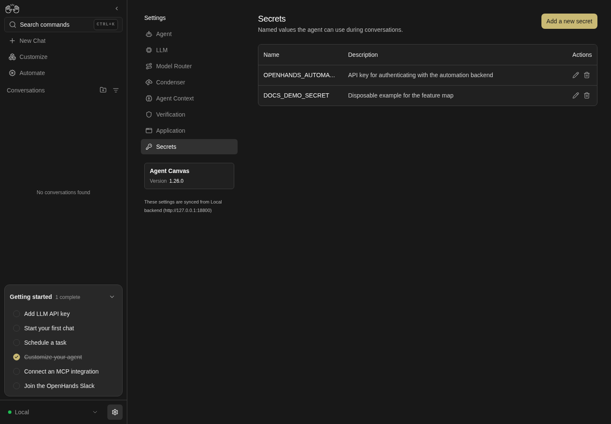
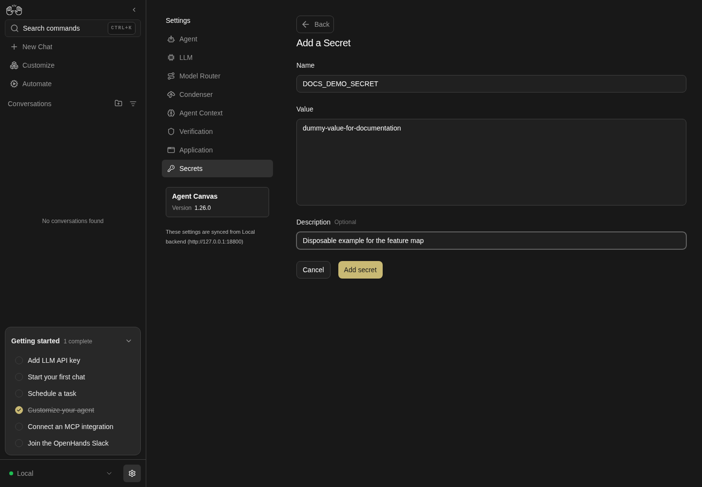

How to get to it
- Sidebar settings gear (
backend-selector-settings-link), then Secrets in the settings navigation (sidebar-settings-/settings/secrets). - Direct URL
/settings/secrets. - Command menu (
Control+korMeta+k, orcommand-menu-triggerin the sidebar): search "Secrets", choose Secrets settings.
Before you start
Start with the common launch and health checks, then follow this family’s preconditions in order. Recipes share the fixtures and state named below.
Preconditions:
- Baseline state (launched, doctored,
onboard --skipdone). - No secret named
QA_TMP_SECRET,QA_AGENT_SECRET,QA_RENAMED_SECRETorQA_BACK_SECRETexists (control-openhands api GET /api/settings/secrets). F14.agent-access,F14.renameandF14.edit-valueneed an active LLM profile (control-openhands llm preset deepseek).
Behavior inventory
11 stable behavior IDs and their expected behavior
F14.listthe Secrets page lists each secret's name and description with Edit and Delete actions; the launcher-seededOPENHANDS_AUTOMATION_API_KEYis always present. Read recipe ↓F14.createadding a secret persists it; it is listed after a reload. Read recipe ↓F14.create-validationduplicate names, names that break^[a-zA-Z][a-zA-Z0-9_]{0,63}$and empty values are refused with a message. Read recipe ↓F14.editediting the description with the value left blank keeps the stored value; Save stays disabled until something changes. Read recipe ↓F14.deletedeleting asks for confirmation; Cancel keeps the row, Confirm removes it for good. Read recipe ↓F14.agent-accessa conversation started after the secret was saved sees it as an environment variable. Read recipe ↓F14.phonethe page and its forms fit a 390 px viewport without horizontal overflow. Read recipe ↓F14.form-backthe Add and Edit forms replace the list with an Add a Secret / Edit a Secret title and a Back button; Back (like Cancel) returns to the list and discards the draft. Read recipe ↓F14.renamethe Edit form's name is editable; renaming with the value left blank keeps the stored value under the new name, and renaming onto an existing name is refused withSecret already exists. Read recipe ↓F14.edit-valuetyping a value in the Edit form (labelled "Secret Value (leave blank to preserve the existing value)") replaces the stored value for new conversations. Read recipe ↓F14.delete-escapeEscape closes the delete confirmation without deleting. Read recipe ↓
Readable recipes
Read each script from top to bottom. Code is copied from the map; prose gives the action, expected observation, and conditions. <id>, <run> and similar placeholders stand for values from your own run. Short forms such as browser count continue the same control-openhands invocation; they are kept as documented.
Expected observations describe the recipe’s contract. Captures below selected recipes show representative real states from this snapshot; they do not mark every mapped behavior as passed. Follow cleanup before moving to another family.
No recipes match. Try another word or a behavior ID.
Open the list #
- NoteNavigate from the sidebar.
- Do
control-openhands browser click 'testid=backend-selector-settings-link' - Do
control-openhands browser click 'testid=sidebar-settings-/settings/secrets' - Check
control-openhands browser count 'testid=secret-item >> has-text=OPENHANDS_AUTOMATION_API_KEY' - ExpectThe count is
1and the URL is/settings/secrets.

Secrets page lists DOCS_DEMO_SECRET with its description and edit and delete controls; no secret value is displayed.
Representative documentation capture, not a complete run of this recipe or family. Captured on an isolated local backend at desktop viewport using the current main checkout. The add form used a harmless dummy value. The add form shows this value in plain text; the saved list does not display values.
How this screenshot was taken
canvas: 1.26.0 · agent server: 1.53.0 · sdk: 1.53.0 · automation: 1.19.0
OH_VERIFY_RUN="$OH_VERIFY_RUN" control-openhands browser goto /settings/secrets
OH_VERIFY_RUN="$OH_VERIFY_RUN" control-openhands browser wait testid=add-secret-button
OH_VERIFY_RUN="$OH_VERIFY_RUN" control-openhands browser click testid=add-secret-button
OH_VERIFY_RUN="$OH_VERIFY_RUN" control-openhands browser fill 'testid=add-secret-form >> testid=name-input' DOCS_DEMO_SECRET
OH_VERIFY_RUN="$OH_VERIFY_RUN" control-openhands browser fill 'testid=add-secret-form >> testid=value-input' dummy-value-for-documentation
OH_VERIFY_RUN="$OH_VERIFY_RUN" control-openhands browser fill 'testid=add-secret-form >> testid=description-input' 'Disposable example for the feature map'
OH_VERIFY_RUN="$OH_VERIFY_RUN" control-openhands browser click 'testid=add-secret-form >> testid=submit-button'
OH_VERIFY_RUN="$OH_VERIFY_RUN" control-openhands browser reload
OH_VERIFY_RUN="$OH_VERIFY_RUN" control-openhands browser wait 'testid=secret-item >> has-text=DOCS_DEMO_SECRET'
OH_VERIFY_RUN="$OH_VERIFY_RUN" control-openhands browser screenshot --feature F14.list --name secrets-listCommand-menu entry #
- Do
control-openhands browser goto /(the previous bullet left
/settings/secrets, which would make the URL check pass vacuously), then - Do
control-openhands browser press Control+k - Do
control-openhands browser type 'testid=command-menu >> role=combobox' Secrets - Do
control-openhands browser press Enter - Check
control-openhands browser url - ExpectThe URL ends in
/settings/secrets.
Create #
- Do
control-openhands browser click 'testid=add-secret-button' - Do
control-openhands browser fill 'testid=add-secret-form >> testid=name-input' QA_TMP_SECRET - Do
control-openhands browser fill 'testid=add-secret-form >> testid=value-input' dummy-value-123 - Do
control-openhands browser fill 'testid=add-secret-form >> testid=description-input' 'QA dummy' - Do
control-openhands browser click 'testid=add-secret-form >> testid=submit-button' - Do
control-openhands browser reload - Check
control-openhands browser count 'testid=secret-item >> has-text=QA_TMP_SECRET' - ExpectThe count is
1after the reload.

Add secret form contains DOCS_DEMO_SECRET, the visible dummy value dummy-value-for-documentation and a disposable example description.
Representative documentation capture, not a complete run of this recipe or family. Captured on an isolated local backend at desktop viewport using the current main checkout. The add form used a harmless dummy value. The add form shows this value in plain text; the saved list does not display values.
How this screenshot was taken
canvas: 1.26.0 · agent server: 1.53.0 · sdk: 1.53.0 · automation: 1.19.0
OH_VERIFY_RUN="$OH_VERIFY_RUN" control-openhands browser goto /settings/secrets
OH_VERIFY_RUN="$OH_VERIFY_RUN" control-openhands browser wait testid=add-secret-button
OH_VERIFY_RUN="$OH_VERIFY_RUN" control-openhands browser click testid=add-secret-button
OH_VERIFY_RUN="$OH_VERIFY_RUN" control-openhands browser fill 'testid=add-secret-form >> testid=name-input' DOCS_DEMO_SECRET
OH_VERIFY_RUN="$OH_VERIFY_RUN" control-openhands browser fill 'testid=add-secret-form >> testid=value-input' dummy-value-for-documentation
OH_VERIFY_RUN="$OH_VERIFY_RUN" control-openhands browser fill 'testid=add-secret-form >> testid=description-input' 'Disposable example for the feature map'
OH_VERIFY_RUN="$OH_VERIFY_RUN" control-openhands browser screenshot --feature F14.create --name add-secretDuplicate name #
- Do
control-openhands browser click 'testid=add-secret-button' - Notefill
name-inputwithQA_TMP_SECRETandvalue-inputwithotheras above, clicktestid=add-secret-form >> testid=submit-button, then - Check
control-openhands browser snapshot 'testid=add-secret-form' - ExpectThe snapshot shows the paragraph
Secret already existsand the form stays open.
Invalid name #
- NoteIn the same form run
- Do
control-openhands browser fill 'testid=add-secret-form >> testid=name-input' 'bad name!' - Noteclick submit, then
- Do
control-openhands browser eval "document.querySelector('[data-testid=add-secret-form] [data-testid=name-input]').validationMessage" - ExpectThe value is the browser's pattern message (
Please match the requested format.in Chromium) and no secret is created (api GET /api/settings/secrets). - NoteClose with
- Do
control-openhands browser click 'testid=add-secret-form >> testid=cancel-button'
Empty value #
- Do
control-openhands browser click 'testid=add-secret-button' - Notefill
testid=add-secret-form >> testid=name-inputwithQA_EMPTY_VALUEand leavevalue-inputempty. - Check
control-openhands browser enabled 'testid=add-secret-form >> testid=submit-button'is
false, and - Check
control-openhands browser eval "document.querySelector('[data-testid=add-secret-form] [data-testid=value-input]').validationMessage"is
Please fill out this field.Close withtestid=add-secret-form >> testid=cancel-button;api GET /api/settings/secretslists noQA_EMPTY_VALUE.
Edit keeps the value #
- Do
control-openhands browser click 'testid=secret-item >> has-text=QA_TMP_SECRET >> testid=edit-secret-button' - Check
control-openhands browser value 'testid=edit-secret-form >> testid=value-input'(empty) and
- Check
control-openhands browser enabled 'testid=edit-secret-form >> testid=submit-button'(
false). - NoteFill
testid=edit-secret-form >> testid=description-inputwithQA dummy edited;enabledturnstrue. - NoteClick
testid=edit-secret-form >> testid=submit-button, - Do
control-openhands browser reload - Check
control-openhands browser text 'testid=secret-item >> has-text=QA_TMP_SECRET' - ExpectThe row text is
QA_TMP_SECRETandQA dummy editedseparated by a tab ("QA_TMP_SECRET\tQA dummy edited"in the JSON output).
Delete with confirmation #
- Do
control-openhands browser click 'testid=secret-item >> has-text=QA_TMP_SECRET >> testid=delete-secret-button' - Notethe dialog
testid=confirmation-modalreadsAre you sure you want to delete this key?. - Do
control-openhands browser click 'testid=confirmation-modal >> testid=cancel-button' - Notethe row count stays
1. - NoteRepeat the delete click, then
- Do
control-openhands browser click 'testid=confirmation-modal >> testid=confirm-button' - Do
control-openhands browser reload - Check
control-openhands browser count 'testid=secret-item >> has-text=QA_TMP_SECRET' - ExpectThe count is
0.
Agent receives the secret #
- NoteCreate
QA_AGENT_SECRETwith valueqa-dummy-4821through the form as in Create. - Wait
control-openhands conversation start --prompt "Run exactly this command and reply with only its output: python3 -c \"import os; print(os.environ.get('QA_AGENT_SECRET') == 'qa-dummy-4821')\"" --wait --timeout 240 - Check
control-openhands conversation events <id> --kinds ObservationEvent - ExpectThe terminal observation's text is
True. - NoteAssert the observation, not the agent's reply: deepseek-flash often declines to echo anything about a secret (see Gotchas).
- NoteKeep
QA_AGENT_SECRETfor Rename and Replace value below; they delete it.
Phone layout #
- Do
control-openhands browser goto /settings/secrets(
conversation startleft the browser on the conversation), - Do
control-openhands browser viewport phone - Check
control-openhands browser bbox 'testid=secrets-settings-screen' - Do
control-openhands browser screenshot --feature F14.phone --name list - Note
insideViewportistrueandpageHorizontalOverflowisfalse; the screenshot shows the table with Edit and Delete icons. - Do
control-openhands browser click 'testid=add-secret-button' - Check
control-openhands browser bbox 'testid=add-secret-form'(
insideViewporttrue, no page overflow) and - Do
control-openhands browser screenshot --feature F14.phone --name add-form - Notecancel the form.
- NoteReturn with
- Do
control-openhands browser viewport desktop
Back discards the draft #
- NoteOn
/settings/secretsrun - Do
control-openhands browser click 'testid=add-secret-button' - Check
control-openhands browser text 'testid=secret-editor-title'(
Add a Secret). - NoteFill
testid=add-secret-form >> testid=name-inputwithQA_BACK_SECRETandvalue-inputwithdummy, then - Do
control-openhands browser click 'testid=back-to-secrets' - Check
control-openhands browser count 'testid=add-secret-form'is
0, the list is back (browser count 'testid=secret-item'>0) and - Check
control-openhands api GET /api/settings/secretslists no
QA_BACK_SECRET. - NoteReopening Add shows an empty
name-input(browser value); leave withtestid=back-to-secrets. - ExpectThe Edit form shows
Edit a Secretin the samesecret-editor-title.
Rename keeps the value #
- NoteNeeds
QA_AGENT_SECRETfrom Agent receives the secret. - Do
control-openhands browser goto /settings/secrets - Do
control-openhands browser click 'testid=secret-item >> has-text=QA_AGENT_SECRET >> testid=edit-secret-button' - Notefill
testid=edit-secret-form >> testid=name-inputwithOPENHANDS_AUTOMATION_API_KEYand clicktestid=edit-secret-form >> testid=submit-button: - Check
control-openhands browser snapshot 'testid=edit-secret-form'shows the paragraph
Secret already existsand the form stays open. - NoteFill
name-inputwithQA_RENAMED_SECRET(value left blank), click submit, - Do
control-openhands browser reload - Note
browser count 'testid=secret-item >> has-text=QA_RENAMED_SECRET'is1, theQA_AGENT_SECRETcount is0, andapi GET /api/settings/secretslists only the new name. - Wait
control-openhands conversation start --prompt "Run exactly this command and reply with only its output: python3 -c \"import os; print(os.environ.get('QA_RENAMED_SECRET') == 'qa-dummy-4821', 'QA_AGENT_SECRET' in os.environ)\"" --wait --timeout 240 - Check
control-openhands conversation events <id> --kinds ObservationEvent - Note: the observation is
True False.
Replace the value #
- Do
control-openhands browser goto /settings/secrets - Do
control-openhands browser click 'testid=secret-item >> has-text=QA_RENAMED_SECRET >> testid=edit-secret-button' - Check
control-openhands browser snapshot 'testid=edit-secret-form'(the value textbox is named
Secret Value (leave blank to preserve the existing value)). - NoteFill
testid=edit-secret-form >> testid=value-inputwithqa-dummy-7350;browser enabled 'testid=edit-secret-form >> testid=submit-button'istrue. - NoteClick submit;
browser count 'testid=edit-secret-form'is0. - NoteStart a conversation with the prompt
Run exactly this command and reply with only its output: python3 -c "import os; print(os.environ.get('QA_RENAMED_SECRET') == 'qa-dummy-7350')"(quoted as above) and read itsObservationEvent:True.
Escape cancels delete #
- Do
control-openhands browser goto /settings/secrets - Do
control-openhands browser click 'testid=secret-item >> has-text=QA_RENAMED_SECRET >> testid=delete-secret-button' - Do
control-openhands browser press Escape - Check
control-openhands browser count 'testid=confirmation-modal'(
0) andbrowser count 'testid=secret-item >> has-text=QA_RENAMED_SECRET'(1). - NoteClean up: delete
QA_RENAMED_SECRETwithdelete-secret-button→testid=confirmation-modal >> testid=confirm-button,browser reload;api GET /api/settings/secretslists onlyOPENHANDS_AUTOMATION_API_KEY.
Gotchas and known limits
- Settings nav test ids embed the route, slashes included:
sidebar-settings-/settings/secrets. Quote the selector as written. - The value editor is a plain
textarea, not a password field: use dummy values only, and never ask the agent to print a real secret. - Edit forms intentionally show an empty value; that is not data loss.
- The invalid-name check is native browser validation. It shows a tooltip that screenshots do not capture, and it leaves any earlier
Secret already existsparagraph on screen. Assert withvalidationMessageand the API, not the paragraph. - The model is the weak link in the agent checks, not the product: asked to print a secret's length or last characters, deepseek-flash replies "I can't run that one" and runs nothing, and even for the equality check it may refuse to repeat
Truein its reply. Use the equality prompt and read the terminalObservationEvent;conversation eventstruncates message text to about 160 characters. - The conversation Overview has a Secrets drawer (
conversation-overview-secrets-panel,conversation-overview-secrets-add-button) built on the same form, but no UI opens it: the Overview "..." menu (conversation-overview-ellipsis) offers Workspace and Git sections only. It is not a user entry point today. - There is no empty state to reach safely:
secrets-emptyrenders only with zero secrets, which means deleting the launcher-seeded key (see below). - Secrets reach only conversations started after the save. Reuse an older conversation and the variable is missing.
- At 390 px the name column truncates long names (
OPEN…); usebrowser texton the row rather than the screenshot to read a name. OPENHANDS_AUTOMATION_API_KEYis seeded by the launcher for automations; deleting it breaks F18/F19 runs in the same stack.
Source paths: src/routes/secrets-settings.tsx, src/components/features/settings/secrets-settings/, src/api/secrets-service.ts.